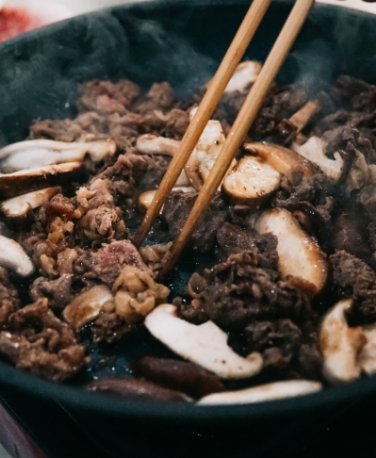

Interests
料理、映画、音楽、読書は私にとって人生を豊かにする重要な要素です

料理は私の創造性を引き出す場でもあり、食べ物を通じて人々とつながる手段でもあります。新しいレシピを試したり、独自のアレンジを加えたりすることで、自分の好みや個性を表現できます。また、料理は文化や伝統を体験する方法でもあります。世界中の料理を探求することで、異なる国や文化に触れることができます。
映画は私にとって感情を揺さぶられる素晴らしい芸術形式です。映画は物語を視覚的かつ感情的に伝えることができ、私たちを異なる世界に連れて行ってくれます。さまざまなジャンルの映画を鑑賞することで、様々な視点やアイデアに触れることができます。また、映画は共感や感動を呼び起こし、私たちの心に深い印象を残します。

音楽は私の心を豊かにし、エネルギーを与えてくれる存在です。さまざまなジャンルの音楽を聴くことで、様々な感情を引き出されます。音楽は言葉を超えて私たちの心に響き、心の中の特別な場所を刺激します。また、音楽は人々を結びつけ、共感や共鳴を生み出す力を持っています。
読書は私の知識を拡げ、想像力を刺激する優れた手段です。本は異なる世界や時代に私たちを連れて行ってくれます。物語や情報を通じて新しい視点を得ることができますし、読書は自己成長や学びのプロセスにも欠かせません。本を読むことは私にとって静寂とリラックスをもたらし、新たな発見や洞察を提供してくれます。
料理、映画、音楽、読書は私の生活において重要な役割を果たしています。
これらの活動を通じて、自己表現や学び、感情の豊かさを追求し、より充実した人生を送ることができます。